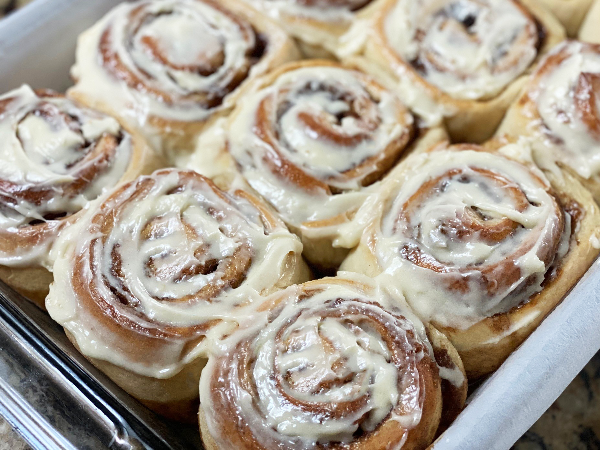

Cinnamon Rolls

Batch of Cinnamon Rolls straight from the oven!
Sweet Cinnamon Rolls are one of my favorite desserts, Whenever I see a Cinnabon restaurant I always get a six pack
to go. Originally from Sweden,
these circular delights are not only fantastic straight from the oven but also as leftover
treats the next day. I have made this recipe plenty of times
and it should provide a baker's dozen in a large baking dish and is best served with cold milk.
Ingredients
Dough:
- 2 3/4 cups of all-purpose flour
- 1 teaspoon of salt
- 1/4 cup of white granulated or sugar cane sugar
- 2 tablespoons of unsalted butter
- 1 packet of instant or active-dry yeast
- 1/2 cup of water
- 1/4 cup of milk
- 1 egg
Cinnamon Filling
- 2/3 cup of brown sugar
- 1 tablespoon of ground cinnamon
- 1/4 cup (1/2 stick) of unsalted butter
- 1 teaspoon of vanilla extract
Vanilla Glaze
- 1 1/2 cups of powdered sugar
- 1/4 cup (1/2) stick of unsalted butter
- 1 teaspoon of vanilla extract
- 2-3 tablespoons of milk
Steps for Dough
- mix the water and milk together and heat up in a microwave safe cup for 30-40 seconds
- add the water/milk mixture to a large bowl and add 1 teaspoon of your white sugar
- open and add the entire packet of yeast to the bowl and give a good stir with a whisk, let it sit for 10 minutes
- in a separate bowl mix your flour and salt together with a whisk
- Melt your 2 tbsp of butter and add it with the rest of your sugar to your yeast mixture and give it a good whisk
- crack and add the whole egg and give another stir
- while stirring (switch to a wooden spoon), add parts of the flour until you have only a small part left and its sticking to your spoon
- grab and start kneading the dough for about 8 minutes (fold and push down then rotate 90 degrees and repeat for kneading)
- Once the dough is ready spray the inside of a large bowl with cooking spray and place the dough inside covered with plastic wrap and a towel for 1 hr
- after 1 hr take the dough out and roll into a large thin rectangle with a rolling pin then start making the filling
Steps for Cinnamon Filling
- Mix the brown sugar, ground cinnamon, and vanilla extract in a bowl with a spoon
- using your softened butter (if not softened use the microwave for 10-15 seconds) spread across the dough with a brush or knife
- spread the cinnamon mixture across all of the dough and optionally add other toppings as you like, such as pecans
- once fully coated, start tightly rolling one end to the other until you have a nice tight roll
- divide and cut the roll up into pieces, just mark and cut it in half repeatedly but make sure to have at least 13 pieces
- place them all into a baking pan and cover in plastic wrap to let it rise for 30-45 minutes
- preheat the oven to 375 degrees fahrenheit/190 degrees celsius and take some melted butter and coat the cinnamon rolls with a brush
- put them in the preheated oven for 15-20 minutes until golden brown
Steps for Vanilla Glaze
- mix your powdered sugar, melted butter, and vanilla extract together in a small bowl
- add the milk a tablespoon at a time until it hits your desired consistency while stirring
- drizzle the glaze across the top of the warm cinnamon buns and yum you have some gorgeous gooey cinnamon rolls!
- enjoy and eat!